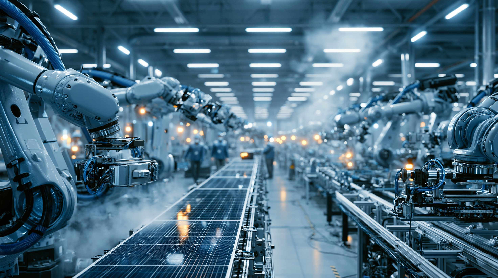
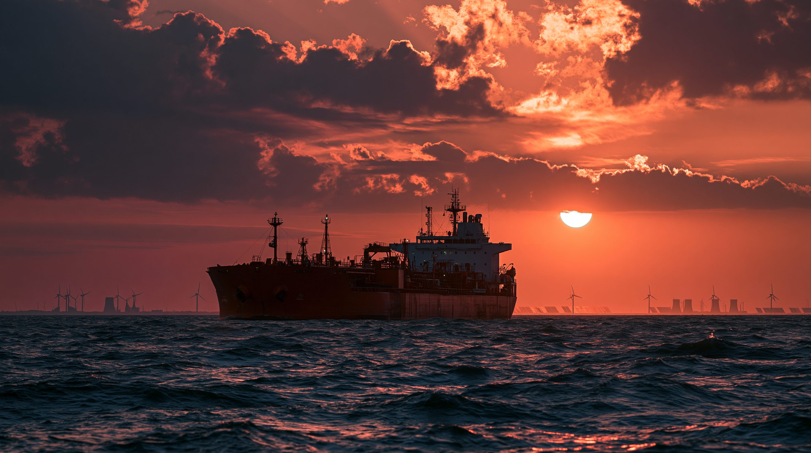

01 「エレクトロステート」とは何か
20世紀の地政学は「石油の地理」で動いた。ペルシャ湾岸・サウジアラビア・ロシアといった ペトロステート（石油国家）が、石油の採掘・輸出によって莫大な経済的・政治的影響力を握った。 石油を武器にできる国が、外交交渉の主導権を持った時代だった。
21世紀、その構図が根底から変わろうとしている。石油の代わりに電気（電力システム）が地政学の核心になり、 太陽光・風力・電池・電気自動車の製造ライン全体を掌握する国が新しい影響力を持つ—— これが「エレクトロステート」という概念だ。
エレクトロステートとは単に「再エネを多く使う国」ではない。 レアアースの採掘から、部品加工、完成品の製造・輸出まで——「電気のサプライチェーン全体」を 国内に垂直統合し、他国の電力転換そのものを自国の産業・外交の道具にできる国を指す。 そして現時点でその条件を満たしているのは、ほぼ中国だけだ。
出典：IEA・Robeco・Bloomberg NEF（2025〜2026年）。蓄電池は世界累計設置容量に占める割合。
中国の電力消費量は2025年に10兆キロワット時を超え、アメリカの2倍以上に達した。 欧州連合・ロシア・インド・日本の合計をも上回る数字だ。 クリーンエネルギー関連の産業が2025年の中国の経済成長の3分の1以上を生み出した。 「電気の国」は経済成長の原動力でもある。
02 「電気スタック」を支える垂直統合
中国の強さは製造シェアの数字だけではない。 地下資源の採掘から製品の輸出まで、電気産業のバリューチェーン全体を自国内に囲い込んだ 「垂直統合」の構造にある。これを「電気スタック（エレクトリック・スタック）」と呼ぶ。

03 タイムライン — 転換の軌跡
パリ協定：中国が大規模転換の起点に
COP21のパリ協定採択。中国は「2030年に排出ピーク」を公約し、太陽光・風力への大規模補助を本格化。 この年から中国の再エネ設備容量は世界最大になる。
「2060年カーボンニュートラル」宣言
習近平が国連総会で中国の2060年ネットゼロ目標を宣言。 クリーンエネルギー産業への国家的資源投入が加速し、 補助金・低利融資・土地提供を組み合わせた「産業政策の総動員」が進む。
中国の再エネ設備追加が429GWに達する
2024年に中国が追加した再エネ設備容量は429ギガワット（太陽光277GW・風力79GW）。 単年の追加量として世界史上最大。 世界の新規太陽光設置の約67%が中国国内で行われた（2025年上半期）。
蓄電池シェアが世界の50%超え・投資1兆ドル
2025年末、中国の電力貯蔵（蓄電池）の累計設置量が世界の51.9%に達し、 初めて単独過半数を超えた。同年のクリーンエネルギー投資は約1兆ドル規模となり、 クリーンエネルギーが中国の経済成長の3分の1以上を牽引。
太陽光＋風力が中国の設備容量の半数超へ
2026年末には太陽光と風力が中国の総発電設備容量の50%超を占める見通し。 一方、トランプ政権は「米国はエネルギー超大国」と称して化石燃料輸出を戦略化。 「電気の連合」対「石油の枢軸」という新たな地政学的分断が鮮明になっている。
04 各国・各陣営の視点
| 陣営・国 | 立場 | 主な行動 | 主な懸念・限界 |
|---|---|---|---|
| 中国 | 電気覇権の追求 | 太陽光・EV・蓄電池の製造独占、年1兆ドル投資、産業外交 | 電力消費の半分は依然として石炭。過剰生産能力で輸出競争が激化 |
| アメリカ | ペトロステートへの回帰 | 石油生産を過去最高に、LNG輸出を戦略化、再エネ補助削減 | 中国のクリーンテック製造競争力との差が広がるリスク |
| 欧州連合 | 板挟み・対抗模索 | 炭素国境調整（CBAM）、EV関税、国内製造補助 | 補助金規模・政治合意の難しさ。中国製品なしでは転換が遅れる |
| グローバルサウス | 安価な技術の活用 | 中国製太陽光・EVを積極輸入、電力インフラ整備 | 技術・メンテ依存で「電気の従属」が生まれるリスク |
| 専門家・市場 | 留保・問い直し | データに基づく中立的評価、「石炭の山の上」論 | 「製造覇権」≠「資源覇権」という本質的問い |

05 データ・統計
世界のクリーンエネルギー投資（2024年・地域別）
2024年の世界全体の再エネ投資は約2兆ドル。中国1カ国で約31%（6,250億ドル）を占める。出典：IEA・Bloomberg NEF（2025）
主要市場のEV新車販売シェア（2025年）
新車販売台数に占める電気自動車の割合。中国では新車の2台に1台がEV。出典：IEA・Bloomberg NEF（2025）